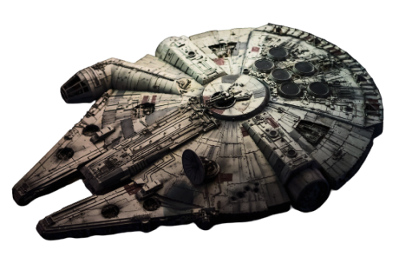

História
O começo
A série teve início com o simples título "Star Wars", escrito e dirigido por George Lucas, lançado em 25 de maio de 1977. Na época da sua estreia se tornou a maior bilheteria de todos os tempos, arrecadando US$ 775.398.007 milhões de dólares e ganhando sete prêmios no Óscar. A Century Foz desacreditou na ideia que o filme daria lucros e entao deu todos os direitos a George lucas e entao ele fundou sua própria empresa cinematográfica a "Lucasfilm" utilizando todo os dinheiro ganho com o filme, depois disso o filme virou uma serie e foi tema de varios bonecos e derivados.A saga foi seguido por duas sequências, The Empire Strikes Back e Return of the Jedi, lançadas com intervalos de três anos, criando a trilogia original, que segue o trio formado por Luke Skywalker, Han Solo e Princesa Leia, que lutam pela Aliança Rebelde para derrubar o Império Galáctico .Depois de 16 anos sem filmes novos, uma nova trilogia chamada de prequela teve início em 1999, com The Phantom Menace. Essa história volta no tempo para contar como Anakin Skywalker se transformou em Darth Vader e acompanha a queda da Ordem Jedi e da República Galáctica, substituída pelo Império.
Fonte:wikipédiaA luta entre o bem e o mal
Na saga é contada á história do trio Luke Skywalker, Han Solo e Princesa Leia, que lutam para derrubar o tirano Império Galáctico. O trio pertence à Aliança Rebelde que tenta fazer a paz voltar a seu mundo. É contada também a jornada de Luke para se tornar um Jedi e a luta contra Darth Vaider, um ex Jedi que sucumbiu ao lado sombrio da Força e ao Imperador.O Império Galático é um governo autoritário que se instaurou na galáxia após a queda do Senado. É Controlado por Darth Sidious, o Império possui um exército de Stormtroopers e, por meio da violência e do poderio militar, governa os principais planetas do universo. Do outro lado temos a Aliança Rebelde que é um grupo composto por todos aqueles que se opõe ao Império Galático. Liderados por Leia Organa, os rebeldes lutam para libertar a galáxia da tirania de Darth Sidious e reestabelecer a República, devolvendo a liberdade aos povos subjugados pelo Império. Toda a luta acontece em diversos planetas e vários personagens, tendo muita cena de ação em todos os filmes, todas as ações são grandiosas e ilustram a luta entre o bem e o mal.
Fonte: Wikipédia O possível fim
A história se passa 30 anos depois da Batalha de Endor. Uma nova força militar inspirada pelo antigo Império Galáctico, promete acabar com a paz. Para combater a Primeira Ordem, liderada pelo mestre Sith Snoke,os heróis Leia Organa, Han Solo, Chewbacca e Luke Skywalker, que permanecem membros ativos da resistência, aliam-se a novas personagens, como o piloto Poe Dameron, líder do Black Squadron, Rey, o ex-stormtrooper Finn ( que tem o antigo sabre de luz de Anakin Skywalker) e o pequeno robô laranja BB-8.Do lado negro da Força estão personagens como o Capitão Phasma, líder da nova geração de stormtrooper, Hux, responsável pela Base Starkiller, o quartel-general da Primeira Ordem, e Rylo Ken. Membro dos Cavaleiros de Ren, um grupo criado depois da Batalha de Endor, e aliado da Primeira Ordem, Kylo Ren tem como objetivo destruir todos os Jedis. Apesar da história não ter interferência de George Lucas, o novo criador não mostra muito interesse em continuar e diz que acha que essa geração deve ter uma nova geração, porém não sabemos qual será o futuro do filme, o que nos resta é aguardar.
Fonte: Observador